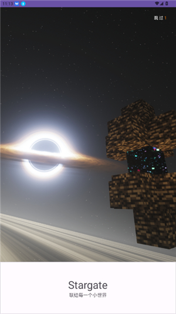
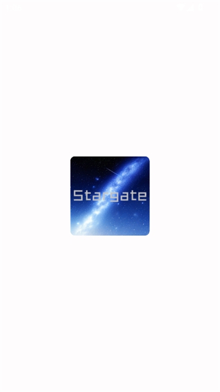

Stargate 深度盘点：MC 联机的另一种打开方式
把 Stargate 这款由深空科技开发的联机工具从方案对比、核心功能、房间设置到社区生态做一次系统性梳理，帮你判断它在不同场景下的价值边界。
对 Minecraft 玩家来说，联机从来不是什么新鲜事。租服务器、Hamachi、手机热点——这些方案在不同时期都有人用过。但 Stargate 的出现让很多人重新思考了一个问题：当两个异地好友只是想在周末临时组一局，真的需要租一台月付服务器，或者折腾半小时 VPN 配对吗？
Stargate 给出的答案是另一条路。它由深空科技开发，目前仍在 Alpha 测试阶段，它的Stargate官网上围绕它的讨论和社区生态已经相当活跃。这篇文章不做教程、不讲安装步骤，而是把它的能力面完整铺开，从它解决了什么问题、亮点在哪、什么场景下该用，到它的局限和短板，都聊清楚。
方案定位：它到底填补了哪个空白
先从和其他联机方案的对比切入，最容易看清 Stargate 的定位。
租服务器是目前最主流的长期运营方案，24 小时在线、支持插件模组、玩家数量不受房主限制，但成本和维护门槛都摆在那里。Hamachi 等 VPN 工具在老玩家中口碑不低，但双方都要安装注册配对，免费版还有节点数限制，新手很容易卡在"无法加入网络"。手机热点最简单——零配置、零成本、延迟低——但仅限同一物理距离内的玩家。
Stargate 落在中间那条缝里：免费、低门槛、零维护，同时把联机距离从"同屋"扩展到了全国甚至全球。它不追求替代租服（那套 24 小时在线的能力 Stargate 没有），也不追求技术向玩家的 VPN 折腾乐趣，而是瞄准了一个更轻的场景——"我和两三个朋友周末想临时约一局 MC"。
这一点是理解 Stargate 全部设计的钥匙。它的核心假设是：房主不上线，房间就不存在。这带来隐私安全（房间不会被陌生人扫到），也意味着它不适合社区运营，但对轻度约局来说，这个假设恰恰对应了大部分玩家的真实需求。
核心能力域盘点
一键开服 + 房间号加入
Stargate 的入门门槛极低：安装包从官方下载拿，装好后打开 App 创建房间，拿到一串房间号，把号码发给朋友，对方输入号码就能加入。不需要双方安装注册配对，不需要配置路由，不需要折腾账号体系（虽然需要登录，但流程比 VPN 配对简单得多）。
这个设计直接击中了 Hamachi 等老牌工具的痛点。很多人对 Hamachi 的印象停留在"配好一次就不想再碰"——节点数量限制、免费版限速、连接质量随双方网络波动大。Stargate 把这套复杂度砍掉，换成了更像游戏内组队的体验。
悬浮窗：不离开游戏的管理中枢
联机时在屏幕边缘会出现一个半透明的 Stargate 浮标，点击展开就是完整的操作面板。房间状态、在线玩家列表、语音开关、房间设置——全部在游戏界面上完成，不需要退出 MC 切出去管理。
悬浮窗的设计思路很清晰：联机管理不应该打断游戏进程。房主可以在玩家列表里直接踢人或拉黑，普通玩家可以给同屋的其他玩家加好友，语音面板会高亮当前说话的人。长按浮标可以拖动位置，透明度也能在设置里调。对重度联机玩家来说，这个悬浮窗是每天都会用的界面，用得顺手与否直接决定了 Stargate 在手机上的可用性。

房间设置：创建前和联机中都能调
游戏模式、人数上限、地图种子、世界类型、权限开关——这些常见选项 Stargate 都支持，而且创建后可以随时通过悬浮窗或主界面调整。模式切换（生存/创造/冒险/旁观者）会自动同步给所有在线玩家，人数上限可在 2 到 40 之间调整，减小上限时不会强制踢人但会阻止新玩家加入。
一些细节值得提：MC 基岩版的种子和 Java 版不同，Stargate 在种子输入上会做区分；房主有"无敌"权限默认开启，玩家互相伤害、允许飞行、强制加入这些权限项都可以单独开关。联机质量相关的设置（视距同步、消息节流、资源包自动下载）也在房间设置里，遇到延迟高的时候调一调可能会有改善。
朋友系统：下次直接邀请，不用再发房间号
Stargate 内置了好友系统。联机中可以直接给同屋玩家加好友，下次想一起玩的时候直接在好友列表里邀请，不用再手动发房间号。这个功能看起来不大，但对经常约同一批人的玩家来说，日积月累能省不少重复沟通的成本。
语音、踢人、黑名单：基础管理工具齐全
房主专属的踢人和拉黑、房间内语音（支持高亮当前说话者和音量调节）、消息节流防刷屏——这些是联机工具的基本盘，Stargate 没做缺失。

短板也要说：它不是万能的
说它好的部分差不多了，现在说说它做不到什么、或者做得不够好的地方。
首先，房主不上线房间就不存在——这在隐私上是优点，但也意味着它完全不适合长期运营场景。你不能指望用 Stargate 搞一个 24 小时的社区服务器，那得用租服。
其次，延迟。相比局域网直连，Stargate 需要通过深空的中继节点转发数据，延迟会略高。文档里明确提到延迟取决于双方网络环境和中继节点稳定性。对轻度约局来说通常可接受，但对追求零延迟的 PvP 对战或红石同步要求高的场景，可能就不够用了。
第三，它还在 Alpha 阶段。功能不算完善，版本迭代快得像每周一更，Bug 持续存在是常态。文档里甚至直接写了"功能还不完善"——这不是谦虚，是对当前状态的诚实描述。如果你追求的是稳定可靠、零折腾的联机体验，Stargate 可能不是首选。
还有一个隐性问题：依赖中继节点。Hamachi 是点对点直连，Stargate 走中继意味着深空的基础设施稳定性直接决定了你的联机质量。如果哪天中继节点出问题，所有 Stargate 房间都会一起遭殃——这是中心化方案绕不开的代价。
社区生态：Alpha 阶段但活跃度不错
深空科技维护了 B 站官方账号和多个 QQ 群，版本更新公告、功能介绍、教程视频都会在那里发。Bug 反馈的机制也比较清晰——更新到最新版、复现问题、收集设备信息后在群里 @ 管理员就能反馈。Stargate文档里给了一个反馈模板，要求同时提供复现步骤、设备信息和补充说明，这种结构化反馈对开发团队来说比一句"闪退"有用得多。
社区贡献的口子也留着：可以分享自己的联机房间到公开列表、发布建筑作品和红石技巧、写评测文章。对一款 Alpha 阶段的工具来说，能有这样的社区组织度已经不错了。
什么样的人该用它
最后给一个画像，看看你是不是 Stargate 的目标用户。
轻度约局的异地好友：两三个朋友周末想临时组一局 MC，不想租服不想折腾 VPN。Stargate 就是为这个场景做的。
对技术折腾没兴趣但想玩联机的休闲玩家：Hamachi 的门槛对很多人来说还是太高了，Stargate 的一键开服体验能把这部分用户拉进来。
已经有租服但偶尔临时加人的房主：租服长期运营，Stargate 用来临时约朋友，两者组合不冲突。
反过来说，如果你想搞社区运营、追求零延迟 PvP、或者讨厌中心化依赖——Stargate 可能不是你的菜。
资料哪里能拿到
Stargate 的资料在三个平台都能找到，国内访问不方便的话可以换个源，内容是同步的：GitHub、Gitee、GitCode。